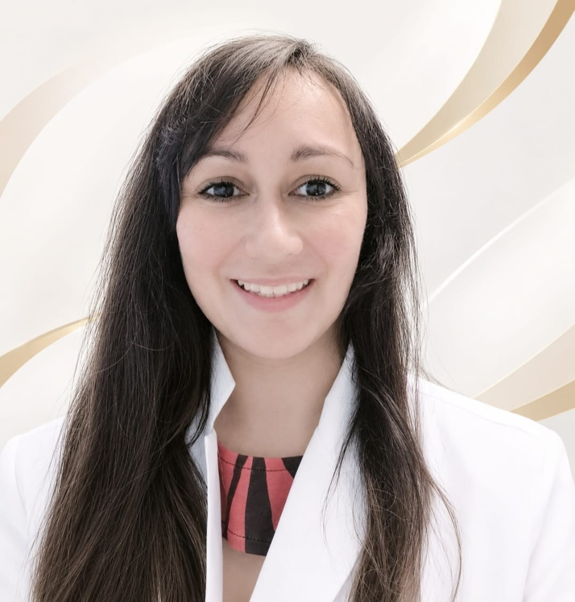

Acreditaciones Oficiales
- 🏛️ Colegiada COEM: Nº [XXXXX] (Madrid)
- 💎 Certificación Oficial: Invisalign & Spark Provider
- 🔬 Membresía Científica: Sociedad Española de Ortodoncia (SEDO)
- 🌐 Membresía Internacional: World Federation of Orthodontists (WFO)
Tiempo para escuchar. Vocación para cuidar.
Soy odontóloga dedicada en exclusiva a la ortodoncia. Concibo mi profesión desde una perspectiva profundamente humana: creo en una atención donde la paciencia, la empatía y la claridad sean el corazón de cada consulta.
Comprender los temores o expectativas de cada paciente forma parte del plan terapéutico. En nuestra consulta de Madrid no existen tratamientos en serie: estudiamos tu fisonomía facial, tu dinámica labial y tu oclusión articular para diseñar un tratamiento tan individual como tu propia huella dactilar.
Mi compromiso es que entiendas cada fase de tu tratamiento desde el primer día, resolviendo cada duda con transparencia y dedicándote todo el tiempo que mereces en cada cita.
Precisión digital en el Barrio de Salamanca
Nuestra práctica clínica en el Centro Médico y Dental Caduceo incorpora la tecnología más avanzada para garantizar diagnósticos indoloros y altamente predecibles.
Escáner Intraoral 3D (iTero)
Captura 6.000 imágenes por segundo con precisión micrométrica. Permite obtener un modelo tridimensional exacto sin usar cubetas con pastas desagradables ni generar náuseas.
Cefalometría y Radiología Digital
Análisis computerizado de las proporciones craneofaciales con mínima dosis radiológica, indispensable para diagnosticar la posición esquelética de los maxilares.
Planificación CAD/CAM 3D
Software de simulación biomecánica donde programamos cada fuerza y movimiento dental antes de fabricar tus alineadores o colocar tu aparatología fija.
Fundamentos biomecánicos y publicación científica
La ortodoncia moderna se asienta sobre la física de los materiales y la respuesta celular de los tejidos periodontales. La Dra. Adriana Mendoza cuenta con formación continuada e investigación de base:
Fuerza friccional en Brackets de Autoligado Pasivo
Autores: Adriana Mendoza Orozco y Roberto Silva Meza.
Estudio experimental comparativo sobre la resistencia por fricción en sistemas de brackets convencionales frente a sistemas de autoligado pasivo. Esta investigación demostró cómo la reducción de la fricción permite la aplicación de fuerzas biológicas más ligeras, minimizando el impacto en la raíz dental y optimizando los tiempos clínicos.
Trayectoria y Experiencia Internacional
Experiencia clínica internacional en Venezuela y ejercicio profesional presencial exclusivo en Madrid (Centro Médico y Dental Caduceo). La Dra. Adriana Mendoza combina una amplia trayectoria clínica adquirida tanto en centros de referencia internacional (incluyendo colaboraciones con B-Dental Lab Group en Caracas) como en la práctica odontológica privada en España, aplicando los estándares científicos más exigentes de la Unión Europea.
Centro Médico y Dental Caduceo (Madrid)
Un entorno diseñado para la calma, con luz natural, estrictos protocolos de esterilización y tecnología de vanguardia.